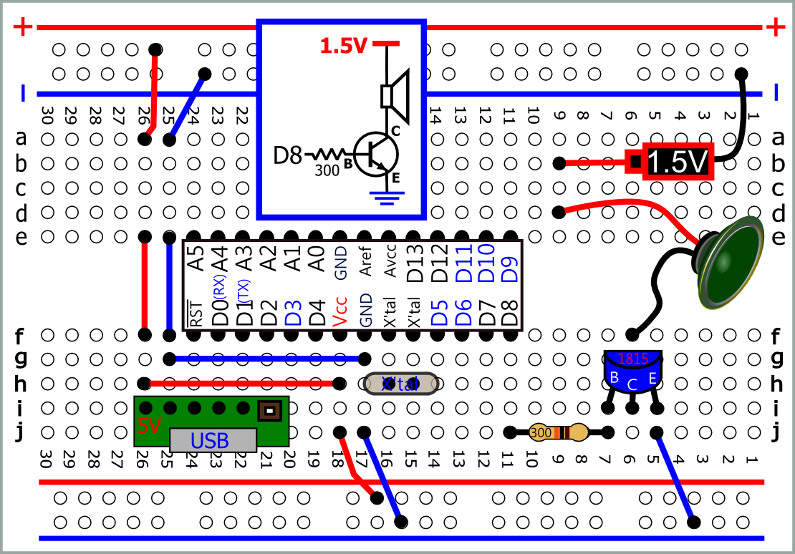 PDF SVG |
#define SPK 8
void setup( ) { tone(SPK, 262); } void loop() { } 示波器 看波形 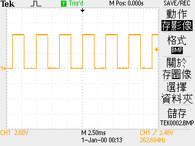 改成 tone(SPK, 700);
改成 tone(SPK, 1000); 試試 |
| #define SPK 8 #define Do 262 void setup( ) { tone(SPK, Do); } void loop() { } |
#define SPK 8 int Do=262; void setup( ) { tone(SPK, Do); } void loop() { } |
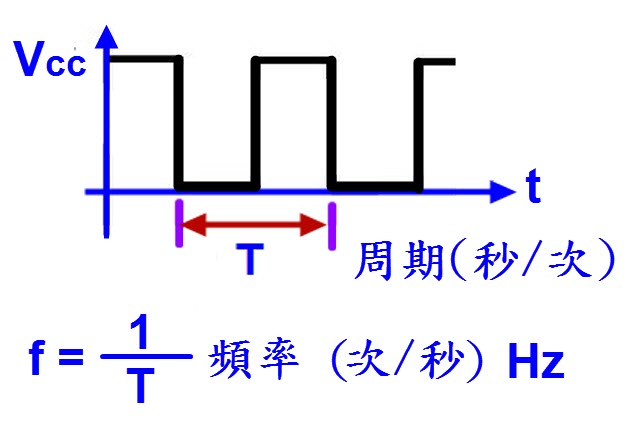 |
| 救護車 低頻頻率700赫茲(650赫茲至750赫茲)，持 續時間0.4秒 高頻頻率1000赫茲(900赫茲至1000赫茲)，持續時間0.6秒 高、低頻二者交替進行 |
| // 700Hz 0.4秒 (400ms) // 1000Hz 0.6秒 (600ms) #define SPK 8 void setup() { } void loop() { tone(SPK,700); delay(400); tone(SPK,1000); delay(600); } |
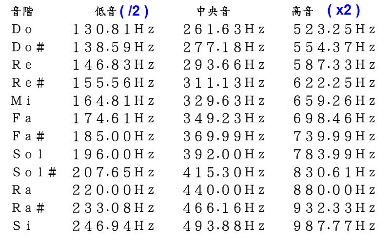 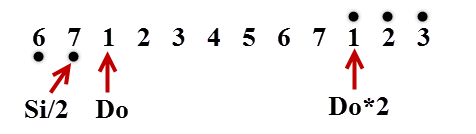 int Do=262; //#define Do 262 int DoS=277;//#define Dos 277 |
| 使用tone函式 D3,D11 PWM無法使用 |
| #define SPK 8 void setup( ) { tone(SPK, 262,2000); } void loop() { } |
|
#define SPK 8 //int Do=262; #define Do 262 void setup() tone(SPK,Do,1000); void loop(){} |
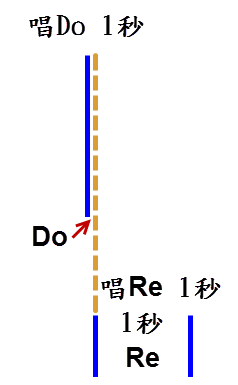 |
|
#define SPK 8 #define Do 262 void setup(){ void loop(){} |
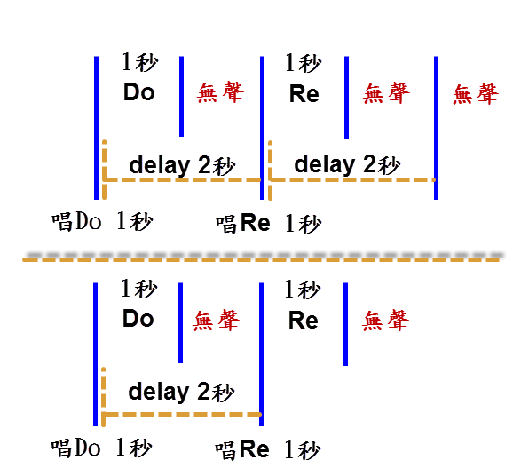 |
|
#define SPK 8 #define Do 262 void setup(){ void loop(){} |
#define SPK 8 #define Do 262 void setup(){ } void loop(){ |
| 不連音 |
|
#define SPK 8 #define Do 262 void setup(){ } void loop(){ tone(SPK,Do,1000); } |
#define SPK 8 #define Do 262 void loop(){ tone(SPK,Do,bt); } |
|
#define SPK 8 #define Do 262 #define bt 1000 // 每分鐘60拍 , 一拍1000ms
void loop() { tone(SPK,Do,bt1_4 ); noTone(SPK); } |
|
函式 (function) |
|
#define SPK 8 #define Do 262 #define bt 1000 //一拍1000ms void loop(){ note(SPK,Do,bt1_4 );//呼叫函式 noTone(SPK); } |
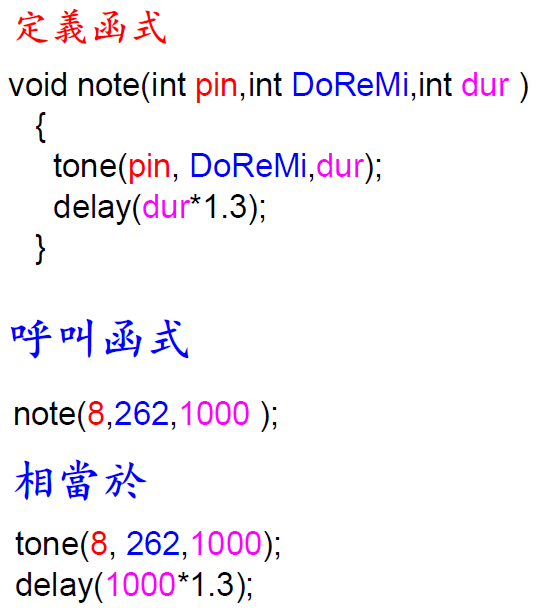
|
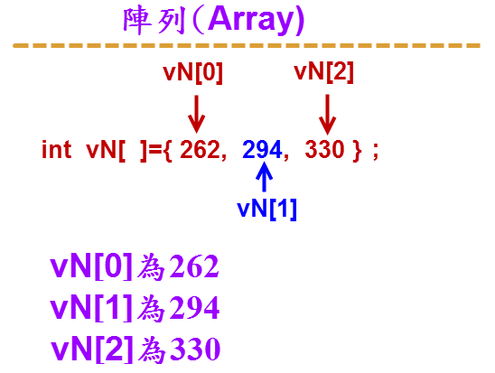 |
| #define SPK 8
#define Do 262 #define bt 1000 //一拍1000ms void setup(){ } void loop(){ note(SPK, scale[0],bts[0]); delay(5000); } |
|
//範例:使用 for 迴圈 #define SPK 8 #define Do 262 #define bt 1000 //一拍1000ms int scale[ ] = { Do, So/2,So/2, La/2, So/2,0, Si/2, Do }; void setup(){ } void loop(){ for (int k = 0; k < sNo; k++) noTone(SPK); } |
| #define SPK 8 #define Do 262 #define Re 294 #define Mi 330 #define Fa 349 #define So 392 #define La 440 #define Si 494 #define bt 1000 //一拍1000ms #define bt2 bt*2 #define bt1_2 bt/2 #define bt1_4 bt/4 #define bt1_8 bt/8 int scale[ ][2] = { {Do,bt1_4},{So/2,bt1_8}, {So/2,bt1_8},{La/2,bt1_4}, {So/2,bt1_4},{0,bt1_4}, {Si/2,bt1_4},{Do,bt1_4} }; int sNo=sizeof(scale)/2/sizeof(int); void note(int pin,int DoReMi,int dur ) { tone(pin, DoReMi,dur); delay(dur*1.3); } void setup(){ } void loop(){ for (int k = 0; k < sNo; k++) { note(SPK, scale[k][0],scale[k][1]); } noTone(SPK); delay(5000); } |
| #include <Wire.h> #include <LiquidCrystal_I2C.h> #define SPK 8 #define Do 262 #define Re 294 #define Mi 330 #define Fa 349 #define So 392 #define La 440 #define Si 494 #define bt 1000 //一拍1000ms #define bt2 bt*2 #define bt1_2 bt/2 #define bt1_4 bt/4 #define bt1_8 bt/8 LiquidCrystal_I2C lcd(0x3F,16,2); int scale[ ][2] = { {Do,bt1_4},{So/2,bt1_8},{So/2,bt1_8},{La/2,bt1_4},{So/2,bt1_4},{0,bt1_4} ,{Si/2,bt1_4},{Do,bt1_4} }; int sNo=sizeof(scale)/2/sizeof(int); void note(int pin,int DoReMi,int dur ) { tone(pin, DoReMi,dur); delay(dur*1.3); } void setup(){ lcd.init(); lcd.backlight(); } void loop(){ for (int k = 0; k < sNo; k++) { //lcd.setCursor(0,0); lcd.print(scale[k][0]); lcd.print(" "); note(SPK, scale[k][0],scale[k][1]); } noTone(SPK); delay(5000); } |
|
//音樂與閃燈 #define SPK 8 #define Do 262 #define bt 1000 //一拍1000ms int flag=1; int scale[ ][2] = { void setup(){ void loop(){ for (int k = 0; k < sNo; k++) noTone(SPK); } |
|
//重複唱兩次 #define SPK 8 #define Do 262 #define bt 1000 //一拍1000ms void note(int pin,int DoReMi,int dur ) void setup(){ for (int k = 0; k < sNo; k++) void loop(){} |
|
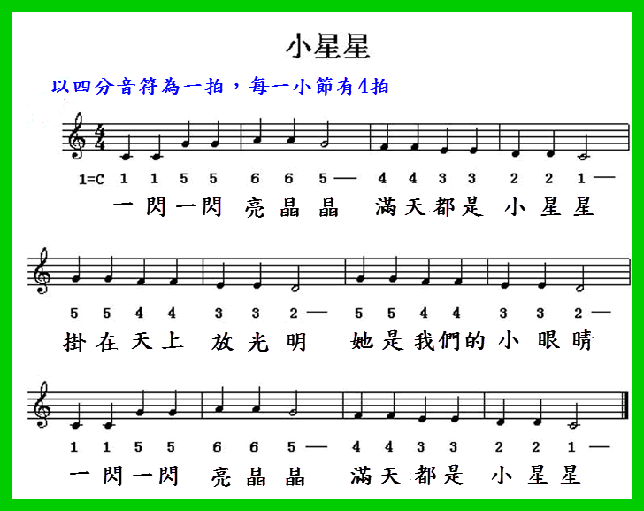 #define SPK 8 #define Do 262 //#define bt 1000 //一拍1000ms #define bt 500 //一拍500ms int sNo=sizeof(scale)/2/sizeof(int); void note(int pin,int DoReMi,int dur ) void setup(){ for (int ii = 0; ii < sNo; ii++) delay(2000); void loop(){} |
|
總鋪師 主題曲 #define SPK 8 #define Do 262 #define bt 500 //每分鐘120拍 , 一拍500ms int repeat=1; int sNo=sizeof(scale)/2/sizeof(int); void note(int pin,int DoReMi,int dur ) void setup(){ for(int i=0;i<repeat;i++) |
| 消防車
低頻頻率650赫茲至750赫茲， |
|
#define SPK 8 void loop() { for (int f=700;f<=1500;f=f+fStep){ for (int f=1500;f>=700;f=f-fStep){
|
| 警車 以低頻頻率650赫茲至750赫茲， 高頻頻率1450赫茲至1550赫茲， 由低頻升至高頻時間0.23秒， 再由高頻降至低頻為0.1秒 |
|
#define SPK 8 void loop() { }
|
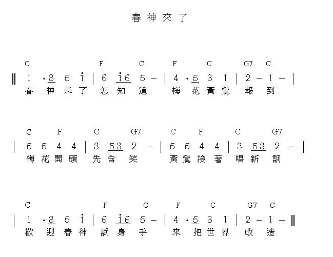 |
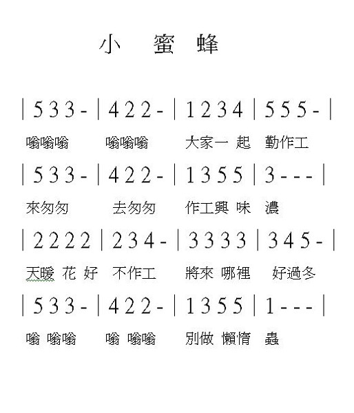 |
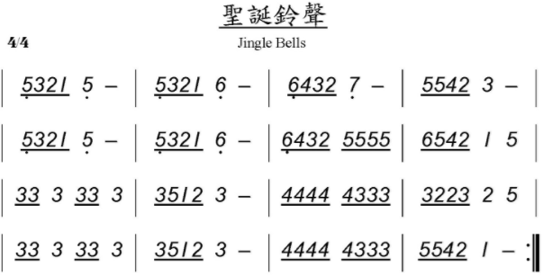 |